Closed-End-Funds: Factors for Machine Learning
USING DISCOUNTS AND OTHER FACTORS TO PREDICT FUTURE RETURNS
Introduction
Closed-End Funds (CEFs) are a particular type of investment vehicle with some interesting properties. They are like traditional open-ended mutual funds with unique properties like:
- shares are not created or redeemed when traded
- leverage is allowed
- shares are traded throughout the day
These properties result in CEFs trading at a discount or premium to their net asset value (NAV). Whereas, stocks, ETFs, and mutual funds trade at or very close to their NAV. The question is can you predict future returns based on the discount/premium, combined with other variables like leverage, expense ratio, etc.
The closed-end fund market is very small compared to other forms of investments. The entire landscape of the closed-end fund market is about 500 funds and around $250 billion in net assets. To put this in perspective, there are 16 companies in the S&P 500 with a greater market cap than the entire closed-end fund space! Mutual fund assets are around $18 trillion, and ETFs are around $5 trillion. This is probably why there is far less written about this space. The really big investors will probably ignore this space due to small net assets and lack of liquidity.
Data
The Closed-End Funds (CEFs) data consisted of daily historical prices, NAVs, adjusted prices, volume, and distributions dating back to the year 2000. In addition, fundamental data consisting of category, market capitalization, net expense ratio, and distribution frequency, was available for each fund.
The fundamental data for all the funds broke them down into 55 different categories. To simplify, I narrowed down to 5 categories.
- Equity US
- Equity Foreign
- Fixed Income (non- Municipal)
- Municipal Bonds
- Precious Metals
Precious Metals only had 4 funds, so that was deleted to simplify further. Removing funds without at least a 5-yr record reduced the total number of funds to 445 from the initial 499 number of funds.
Exploratory Data Analysis
In this section, I will explore correlations of certain factors (independent variables) to future returns (dependent variables).
Discount
Unlike mutual funds, ETFs, and stocks, closed-end funds can trade at a considerable discount to their net asset value. We can explore this uniqueness by plotting regressions that show correlations between discounts and forward 1, 3, 5, and 10 year returns across all four categories. The plots are below.
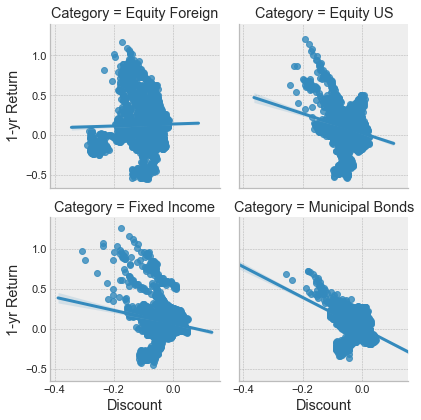
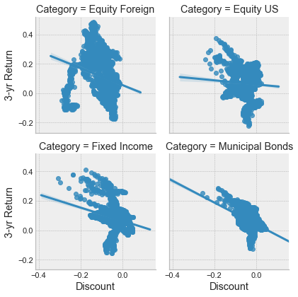
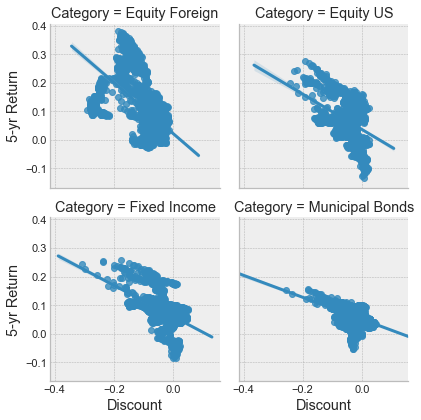
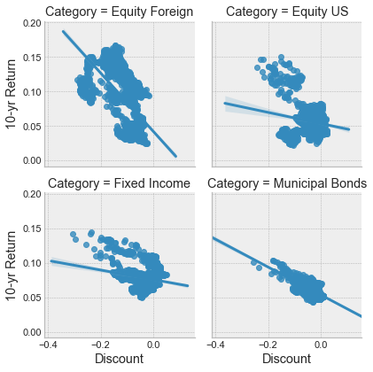
The pearson correlation between discounts and returns for categories can be summarized by the following table:
|
Category |
1-yr return |
3-yr return |
5-yr return |
10-yr return |
|
Equity Foreign |
0.026912 |
-0.260944 |
-0.583268 |
-0.62627 |
|
Equity US |
-0.235003 |
-0.06195 |
-0.404102 |
-0.176689 |
|
Fixed Income |
-0.208146 |
-0.289813 |
-0.545451 |
-0.221148 |
|
Municipal Bonds |
-0.49617 |
-0.479254 |
-0.444536 |
-0.607414 |
The best correlation between Discount and 1 and 3-yr returns is in Municipal Bonds. For 5 and 10-yr returns it is Equity Foreign. For Equity Foreign and Muni Bonds, the best correlation is for 10-yr returns, for Equity US and Fixed Income the best correlation is for 5-yr returns. They tend to get better the longer the time horizon, Muni bonds appear to correlate the best, and none of the correlations are all that strong. All these correlations are for the mean values of all the funds in the category. If we go down to an individual fund, we might find it more interesting. For example, here is the discount to 1-yr return for the fund NID, which shows a much better correlation.
Z-Score
There is another measure of discount that might correlate better with future returns, called the Z-score. Just like in statistics, the Z-score of closed-end funds is the difference of the discount to mean of the discount over a specified period, divided by the standard deviation of the discount over the same period.
Below are the correlation scatter plots of various periods of z-scores with the subsequent 1-yr return.
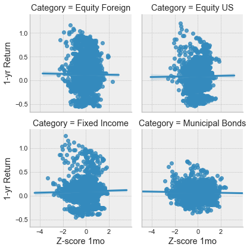
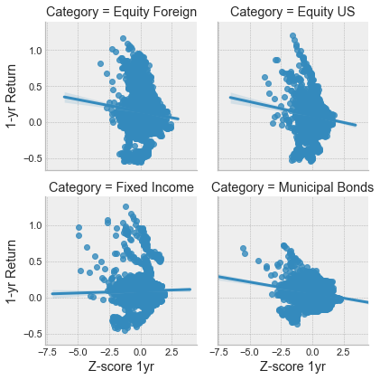
It appears that the Z-score is not very predictive of 1-year returns. However like discounts, perhaps at an individual fund level, there may be better correlations.
Past Performance
Often, funds will state “past performance is no guarantee of future results”. Let’s see if they actually correlate. Here is the past 1-yr returns versus the forward 1-yr returns and the past 10-yr returns versus the forward 1-yr returns for the period ending on 03/05/2019.
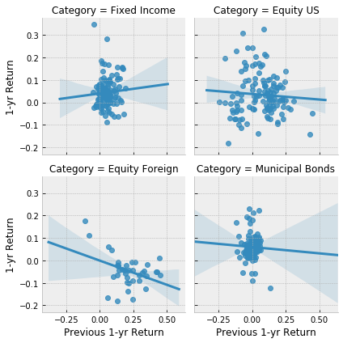
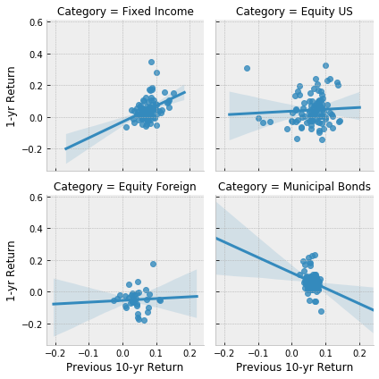
The funds are correct to state that past performance doesn’t result in future results. All categories but fixed income don’t show much of any correlation. For fixed income, 10-yr return shows a better correlation than 1-yr returns. Maybe there is persistent skill in managing fixed income funds?
The 200 Day Moving Average
The 200-day moving average (200dma) is a popular indicator as a smoothing function and longer term trend indicator. We can calculate how far as a percent from the 200dma each fund is and see if it correlates with future 1-yr returns for the period ending 03/05/19.
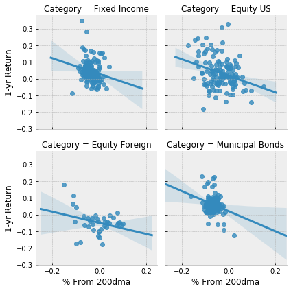
It looks like being below the 200dma is better for future returns, but not always. Again it would probably be better to drill down to individual funds and across different periods.
Net Expense Ratio
Net expense ratio is how much the funds charge to manage the assets. The data set does not have historical net expense ratio so I can’t really do an accurate analysis. Assuming they were similar to a year ago, we can see what happened in the last year.
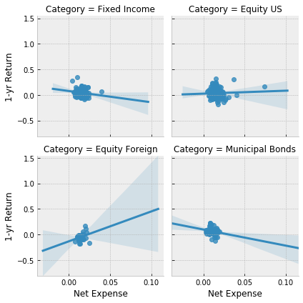
Nothing much there.
To summarize, we’ll take a closer look at the following to put in a model:
- Discount
- Past 10-yr return
- Percent from 200 day moving average
In-Depth Analysis
Specific funds may correlate better than the general market, so I will try to determine which funds to predict. I’m going to focus on predicting the 1-yr forward return. Eliminating funds without a past 10-yr return reduces the number of funds to 359 from 445.
Best discount to 1-yr forward return correlation:
|
Ticker |
1-yr forward return |
|
GDL |
-0.889059 |
|
AOD |
-0.855981 |
|
FEO |
-0.847928 |
|
AGD |
-0.844202 |
|
BKT |
-0.843367 |
Best below 200 day moving average to 1-yr forward return correlation:
|
Ticker |
1-yr forward return |
|
PKO |
-0.831584 |
|
MHI |
-0.78961 |
|
HTY |
-0.789423 |
|
FMY |
-0.768721 |
|
BTA |
-0.765692 |
Best past 10-yr return to 1-yr forward return correlation:
|
Ticker |
1-yr forward return |
|
CAF |
0.759755 |
|
FGB |
0.385954 |
|
IRL |
0.304636 |
|
RIF |
0.275595 |
|
BKT |
0.249453 |
Graphically, here’s how some funds visually relates to a corresponding feature.
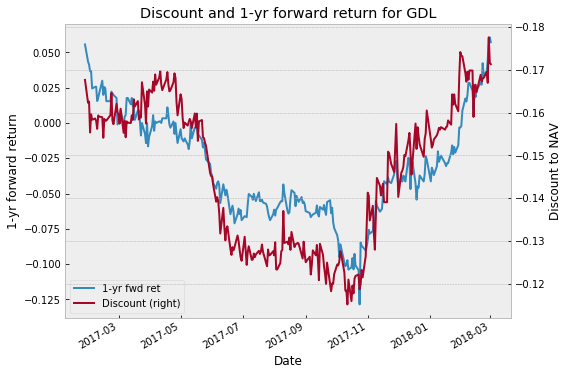
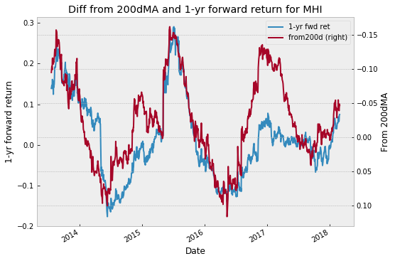
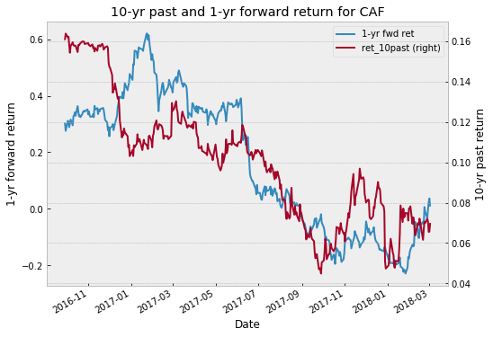
I’m going to pick the Linear Regression, and Random Forest Regression model to see if any predictions are possible. Running all the funds through each model results in the following funds with the best R2 score on the out of sample test data.
Linear Regression:
|
Ticker |
R2 Score |
|
MFV |
0.676503 |
|
GCV |
0.605562 |
|
GRX |
0.598048 |
|
SRV |
0.546841 |
|
PNF |
0.538229 |
Random Forest Regression:
|
Ticker |
R2 Score |
|
EGF |
0.811655 |
|
BTA |
0.797531 |
|
QQQX |
0.69472 |
|
ADX |
0.44853 |
|
RMT |
0.430567 |
Linear Regression for MFV and GCV:
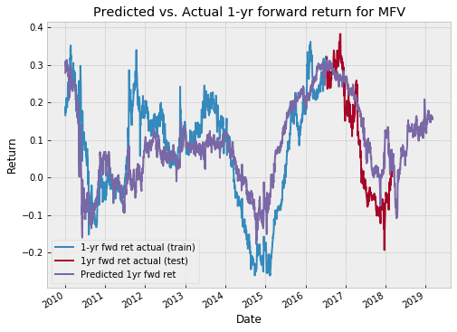
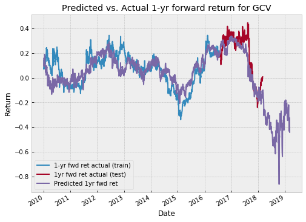
Random Forest Regression for EGF
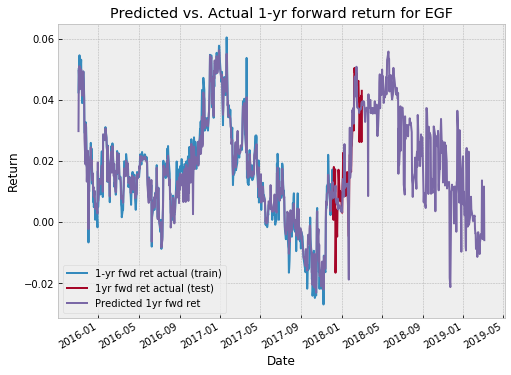
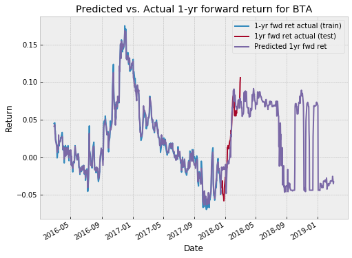
Conclusions
Using the features of Discount to NAV, Past 10-yr returns, and Distance from 200 day moving average, and using the Linear Regression and Random Forest Regression models, at least some funds show some predictability through machine learning. This is just a starting point of exploring this space. Some other areas to dive deeper include:
- The categories may have been oversimplified. If I break it down further, I could compare future returns versus the category to get outperformance.
- Different future return periods. E.g. 1-month, or 10-years.
- More feature engineering to get seasonal trends, slope of moving averages, etc.
- Try more ML models
Comments